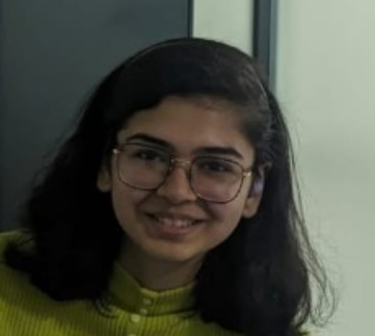

CSD Student at IIITH
I am currently a first year student pursuing B.Tech and M.S. by Research in Computer Science and Engineering from International Institute of Information Technology, Hyderabad. I am passionate about systems programming, distributed systems, and creative arts.
My academic journey has equipped me with both theoretical knowledge and practical skills in computer science, focusing on systems programming, algorithms, and distributed systems.
July 2024 - Present
B.Tech & M.S. by Research in Computer Science and Engineering
CGPA: 7.27/10
IX - XII
State Board HSC: 87.5%
SSC: 95.00%
Jamnagar, India
LKG - VIII
Jamnagar, India
Through extensive coursework and project work, I've developed expertise in systems programming, networking, and data analysis.
Undergraduate Engineering Entrance Examination
Capture the Flag at Infinium Techfest, IIIT Hyderabad
Secured ranks 2, 8, and 12 in the 15th, 16th, and 18th editions
A collection of my technical projects demonstrating expertise in systems programming, networking, and distributed systems.
C, POSIX APIs, TCP Sockets, Multithreading
Distributed Document Collaboration and File Management System
C, POSIX APIs, Process Management
C, libpcap, Network Analysis
C++, Arduino, Python, Matplotlib
Python, SQL, MySQL, Data Modeling
xv6, C
C, Socket Programming
Beyond academics, I'm passionate about creative arts and actively involved in campus activities.
Engages in creative arts and sketching outside of academics
Active member of the college's Art Society